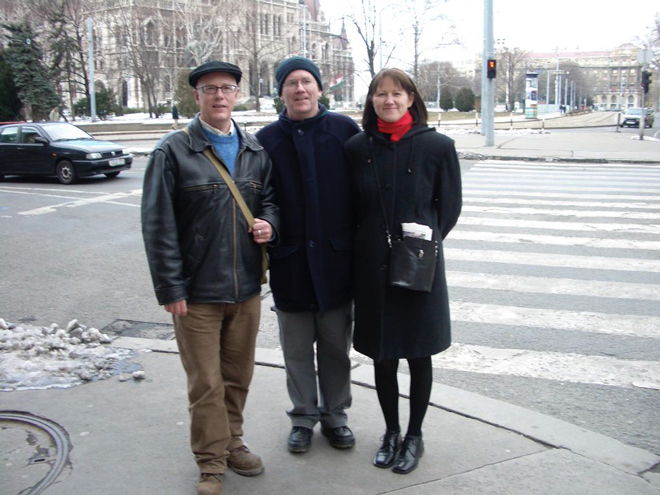
A trip to Hungary to visit my American friend Tom Rooney (with whom I stayed in San Francisco back in 1991). Tom had moved to Hungary to do his Peace Corps volunteering and had met and married György, an English teacher who specialised in the works of Jane Austen.
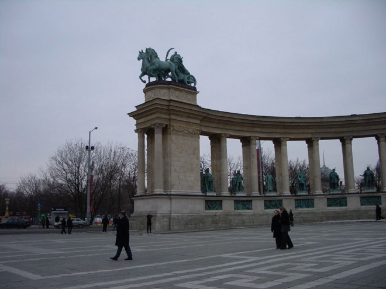
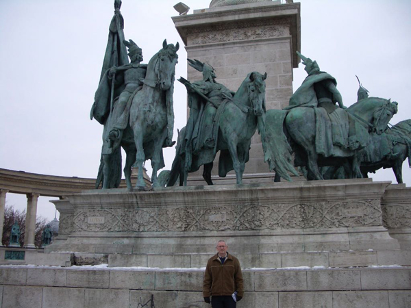
Hösök tere (Heroes' Square) is one of the major sites in Budapest, noted for its iconic statue complex featuring the Seven chieftains of the Magyars and other Hungarian national leaders, as well as the Memorial Stone of Heroes. We then walked across the Chain Bridge, one of Budapest's important river crossings across the Danube.
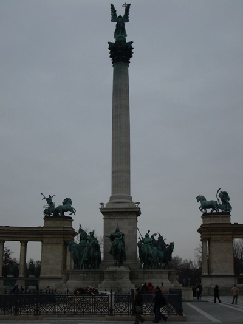
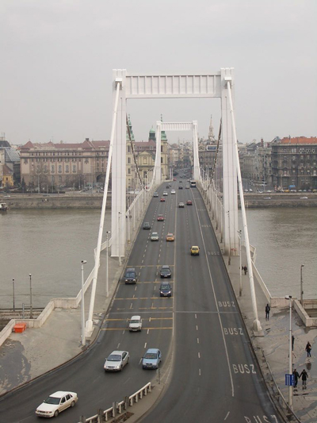
Posing in front of the River Danube.
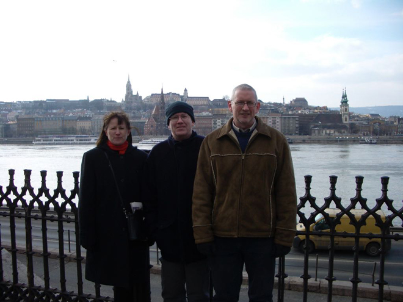
On our trip on the Budapest metro we were amused to see the Hungarian poster for Wesley Snipes' film Blade: Trilogy ...
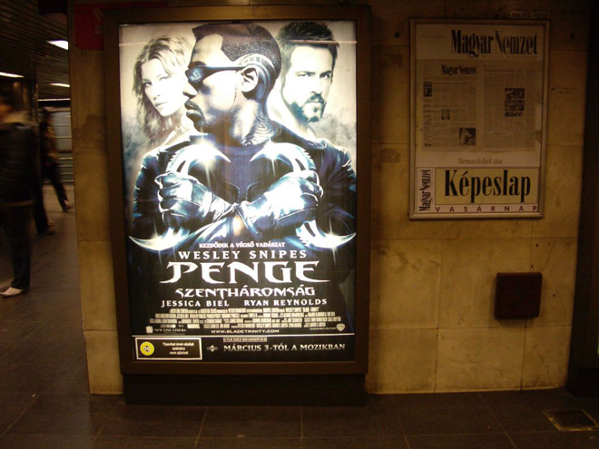
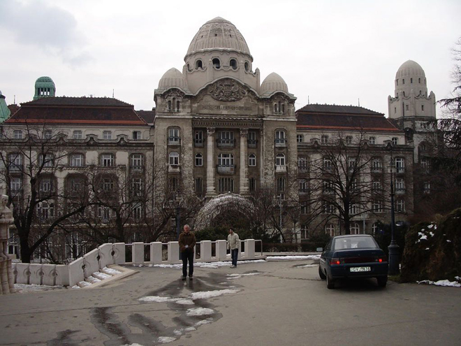
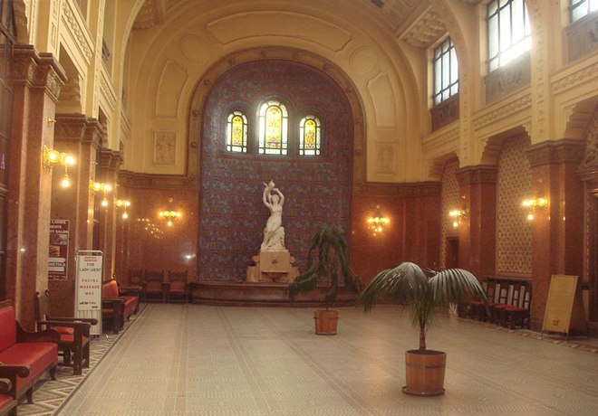
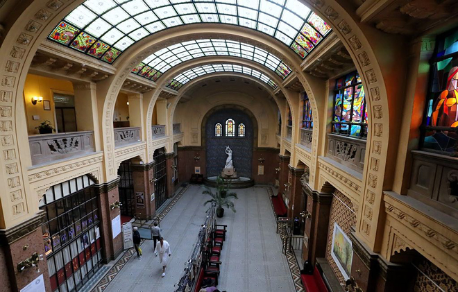
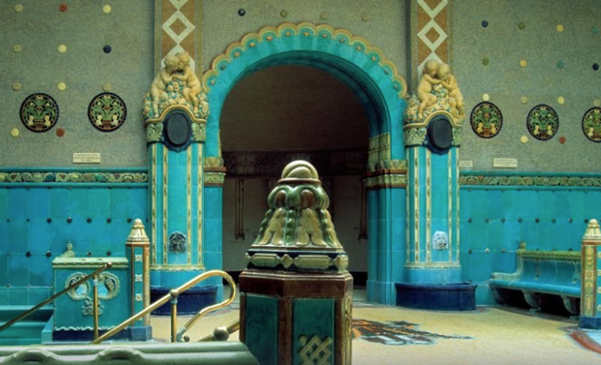
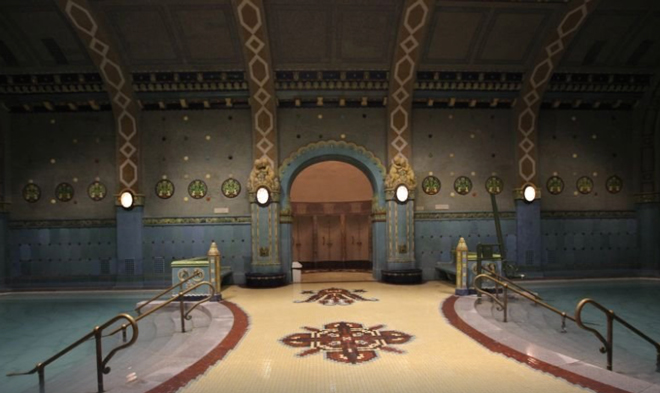
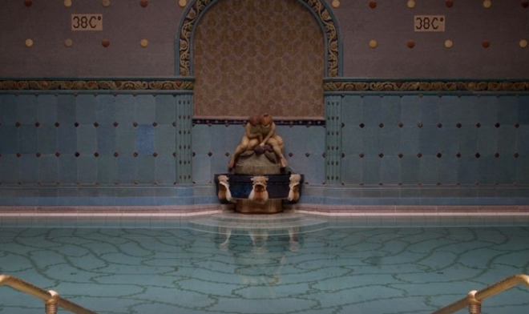
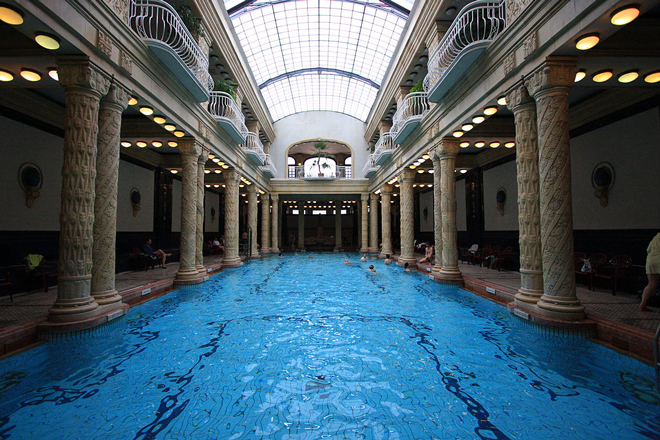
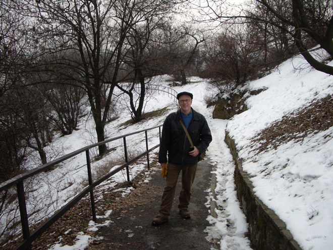
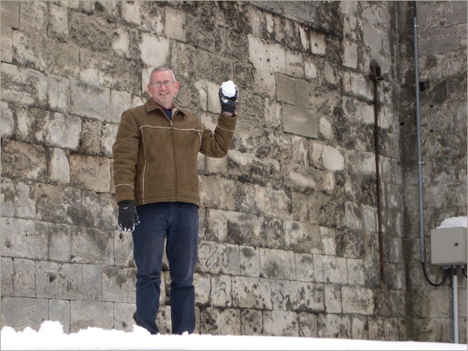
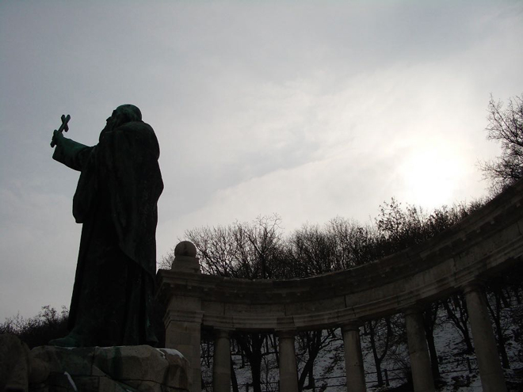
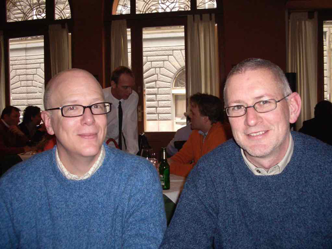
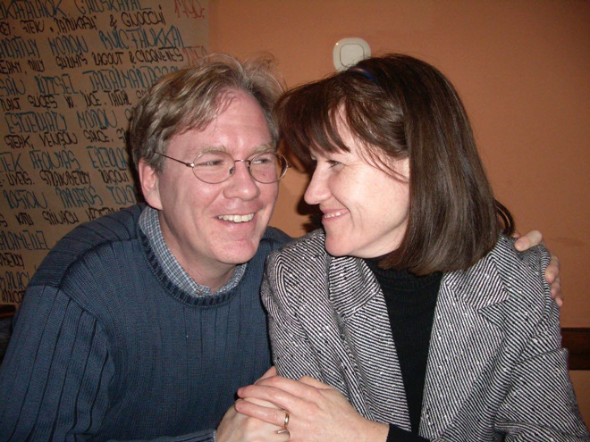
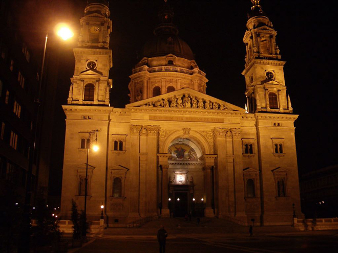